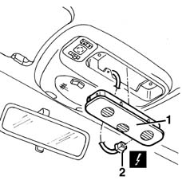

5580E22 Anti-theft device VOLUMETRIC SENSORS - R.R. after checking electrical circuit
- Path
- Procedures > 55 ELECTRICAL EQUIPMENT > 5580 SPECIAL ACCESSORIES > 5580E ANTI-THEFT DEVICE > 5580E22 Anti-theft device VOLUMETRIC SENSORS - R.R. after checking electrical circuit
- Kind
- repair procedure (removal / refitting; the operation number is the code)
- Applies to
- all engines; all production periods
- Interactive page
- https://sloeber94.github.io/elrnDB-fMltpl/en/#/2891986
Applies to: all engines; all production periods
 Removing
Removing
 Refitting
Refitting1. Remove the volumetric sensors unit.
2. Disconnect the electrical connection.
 | Name | Connector |
|---|---|---|
2 | Alarm volumetric sensors assembly |

Applies to: all engines; all production periods
Refitting
RemovingCheck that the volumetric sensors unit is not damaged.
Connect the electrical connection.
Fit the volumetric sensors unit.
Connect the battery.
Check the operation of the system using the Examiner or the other diagnostic equipment.
Topics linked from this page (1)
Topics that link to this page (14)
- A25 ALARM VOLUMETRIC SURVEILLANCE NOT WORKING
- 5505C41 cabin wiring - r r
- 7030B06 sliding rooves (assemblies) - r r
- 7030B11 sliding roof(assembly, 1 front or rear - r r )
- 7030B20 sliding roof glass front or rear - r r
- 7030B23 MOULDING/SUPPORT seal for SLIDING ROOF GLASS PANEL, Front or Rear - R.R.
- 7030B24 sliding roof blind,front or rear - r r
- 7030B66 sun-roof movement ecu - r+r
- 7030B74 sun-roof wiring harness - r r or replace
- 7035A14 OUTER WINDSCREEN MOULDING - R R
- 7035A18 WINDSCREEN GLASS R R INCLUDING CLEANING OF HOUSING
- 7040E50 front modular courtesy light unit - r+r
- 7040H10 roof panel lining - r r
- 7040H16 roof panel lining - r r